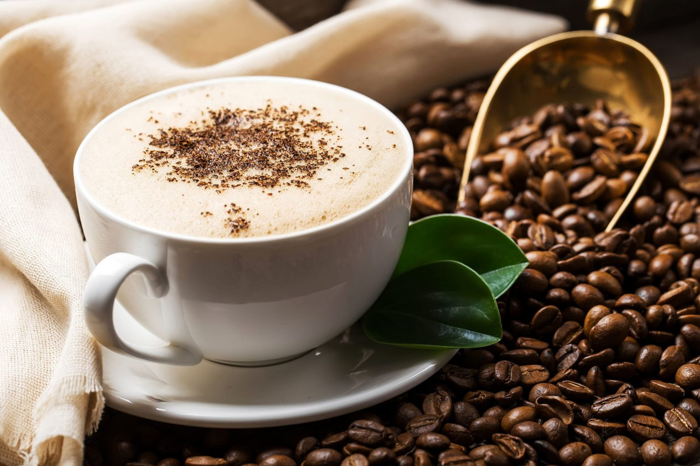
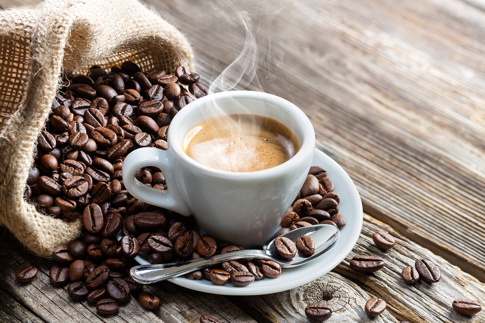

о кофе
Кофе — это не только один из самых бодрящих, ароматных напитков, который уже давно вошел в повседневный обиход, но и название рода вечнозеленых растений, из плодов которых его получают. Кофеин является самым употребляемом наркотиком во всем мире. И попадает он в наш организм именно с кофе. Миллионы людей начинают своей день именно с чашечки ароматного эспрессо или американо. Кто-то пьет его с молоком или сливками, другие предпочитают с сахаром, лимоном и даже с солью. Уже многие люди не представляют своей день без вкусного кофе. Но знаете ли вы все о кофе? Откуда он появился, полезные свойства его и может ли он нанести нашему организму вред.
Зерна кофе — это косточки ягоды кофейного дерева. Для приготовления напитка они очищаются от мякоти, высушиваются и обжариваются. Вкус кофе зависит от вида дерева, условий выращивания, способа обработки и заваривания. Что такое кофе – это тонизирующий безалкогольный напиток, приготовленный на основе жареных зерен, которые выращивают на высокогорных плантациях.
Кофе – напиток, который считается самым популярным по всему земному шару и уходит корнями далеко в прошлое. Многие люди начинают утро именно с этого бодрящего нектара, который дарит энергию, замечательное настроение и бодрость на весь день. История происхождения кофе примечательна и изобилует интересными фактами, легендами.
Кофейные деревья – далеко не редкость в разных странах, но появились они там не так давно. Родом растения, дарящие горьковатые ароматные зерна арабики – древняя Эфиопия. Именно здесь впервые обнаружили деревья, от которых произошли все разновидности. Для любителей робусты окажется сюрпризом, что их любимый напиток происходит из Африки. Родина конголезского кофейного дерева – травянистые берега реки Конго. Интересно, что впервые кофейный напиток начали готовить не в Африке, а в древней Аравии. Африканцы просто использовали горькие зерна как пряность в приготовлении пищи. Больше всего выращивают в Бразилии (в год около 3 млн. тонн), Вьетнаме (примерно 1,8 млн. тонн), Колумбии (800 тыс. тонн). Где в специальных рассадниках высаживают кофейные зерна, обеспечивая достаточное освещение и климатические условия. Саженцы через полгода отправляют на предварительно удобренные поля. Первое плодоношение начинается через два года. Кофейные зерна собираются вручную, при участии сезонных работников.
Первые сведения о кофейном напитке встречаются в 1000-х годах нашей эры. Первооткрыватели бодрящего нектара – арабы, именно они привезли зерна из Африки и начали выращивать на Аравийском полуострове. Напиток мало напоминал всем привычный кофе – в ароматную жидкость добавляли корицу, измельченный имбирный кофе. С Аравийского полуострова кофейное дерево попало в Османскую империю. Только в 16 веке торговцы начали перевозить зерна по морю в Европу. Первая кофейня была открыта в Турции около 1500 года. В Англии кофе появилось значительно позже – около 1600 года. Длительное время разрешено было пить бодрящую жидкость только мужчинам. Во Францию горькие зерна попали в 1700-х годах, в России появление кофе произошло при царе Петре Первом. Как свидетельствуют историки, особой популярности напиток в стране не приобрел. Царю Петру пришлось открывать специальные кофейни и почти насильно заставлять употреблять «горькое пойло», именно так величали ароматную жидкость подданные.
Единственного мнения о том, откуда произошло возникновение название кофе, у историков нет. Есть несколько версий, самая популярная и довольно правдоподобная связана с кочующими арабами. «Кава» в переводе слова с арабского – «бодрящий», «придающий сил». Именно этим напитком взбадривались кочевники во время длительных переходов. Название сохранилось, но в западноевропейских странах напиток стал называться – «кафе» или «кафи». Еще одна версия связана с провинцией Кэфа. Именно здесь впервые начали выращивать деревья в промышленных целях и назвали в честь своей страны. Название сохранилось, но немного преобразовалось.
В мире различают четыре сорта кофейных деревьев. Самый распространенный – арабика (арабский кофе). Занимает около 70% мирового рынка и считается лидером. Обладает насыщенным грубым ароматом, приятным крепким вкусом с горчинкой. Часто используется для приготовления кофейных смесей или растворимых гранул. Робуста – еще один сорт кофейных деревьев, значительно уступающий по количеству производства арабике. Имеет кисловатый аромат, вкусовые качества утонченные, присутствует незначительная сладость. Используется в чистом виде или смесях с арабикой.
Еще два вида сорта, менее известные – эксцельса и либерика. Имеют много общего с робустой, но значительно уступают во вкусовых качествах. Используются для придания напитку крепости, стойкости аромата.
В древние годы кофе готовилось по простому рецепту, какой использовался только в лечебных целях. Цельные неочищенные зерна, предварительно подсушенные под горячими лучами солнца, заливали водой, отправляли на открытый огонь, варили или томили полчаса. Обязательно настаивали в продолжение 5-8 часов. В кофе добавляли пряности (кардамон, имбирь, коричный порошок). Приготовленный настой напоминал оттенком обычный зеленый чай и не имел особой крепости.
Через несколько десятков лет зернышки придумали очищать, обжаривать на открытом огне костра и предварительно измельчать. Принцип создания напитка не менялся – кофейную массу заливали водой, подвергали кипячению и настаивали. Единственное отличие – жидкость была более ароматной и крепкой, приобретала темный оттенок. Пили кофе горячим или холодным, добавляли сладкие ингредиенты (сахар, мед). Бедные слои населения обходились без сладостей, употребляя только горькую жидкость, часто из плохо очищенных зерен.
Кофейная ягода, независимо от сорта дерева, по строению состоит из четырех слоев. Верхняя часть – серебристая тонкая кожица, покрывающая зернышко. Во время обжарки пленка превращается в хрупкую шелуху, которая легко отстает от стенок основной части. Пергаментная оболочка – следующий слой ягоды, довольно жесткий и плотный. Предназначение пачмента – защита внутренней части от повреждений, температурных перепадов. Шелушение пергаментной оболочки обычно проводят перед транспортировкой зерен, чтобы сохранить товар от потерь или порчи.
Еще один слой ягоды – клейковина, имеющая высокий процент содержания сахара. Часто клейкую оболочку путают с сердцевиной. Клейковина при очищении зерен не удаляется – от количества зависит сладость или горькость напитка. Ядро ягоды – мякоть. Именно эта часть используется в приготовлении традиционного кофе.
Мифы о кофе

Самый противоречивый напиток, о котором ходит множество слухов, – это кофе. Его не пьют только ярые противники, на слух и запах не переносящие намека на кофе. Никто не остался равнодушным к этому древнему зелью, бодрящему и согревающему. Существует огромное множество рецептов его приготовления, так что каждый...
История кофе и его названия

История кофе началась много лет назад. Впервые кофе появился, Вы не поверите, примерно в 850 году нашей эры. По самой известной легенде, рассказывающей об истории происхождения кофе, пастух из Эфиопии Калди заметил, что его козы, которые днем поедают листья и яркие красные ягоды неприметного растения, ночью слишком...
День кофе
Как Вы думаете, какой праздник больше всего любят кофеманы? Традиционно подавляющее большинство торжеств связано с употреблением алкогольных напитков. Но в последние несколько лет пришел праздник и на улицу почитателей бодрящего напитка. В День кофе можно испытывать на себе новые рецепты или наслаждаться уже...